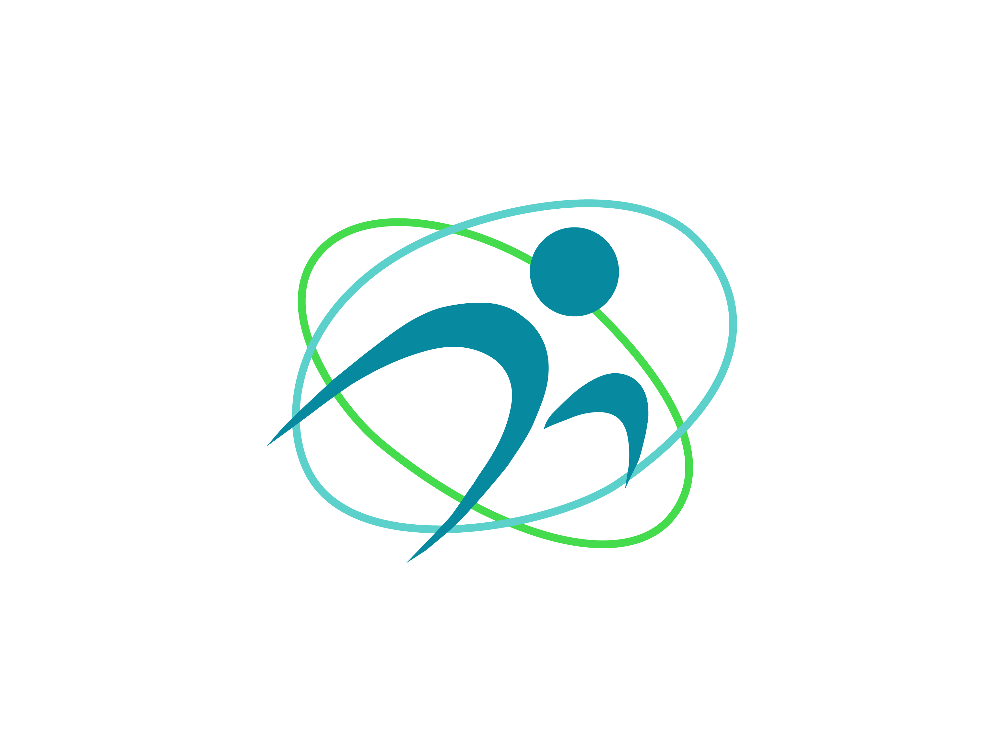

Seu guia de bem-estar, movimento e cuidado com a coluna lombar.
1. Escolha sua semana: Siga a ordem das semanas, fazendo os exercícios no seu ritmo em casa.
2. Ouça as instruções: Em qualquer tela, toque no botão 🔊 Ouvir Tela no topo para escutar a audiodescrição.
3. Adapte se precisar: Sentiu dificuldade? Toque em Ver variações para fazer o exercício sentado ou com apoio.
4. Cultive sua Árvore: Ao terminar os exercícios da semana, preencha o acompanhamento para fazer um novo fruto crescer na sua Árvore do Movimento!
Escolha uma semana para acessar suas atividades.
0 de 8 frutos colhidos
Cada semana concluída ilumina um fruto na sua árvore!
Atenção: Escolha apenas uma das adaptações disponíveis. Não é necessário fazer todas.
Acompanhe seu histórico semanal salvo neste aparelho.